Poni¿ej znajduj± siê zrzuty ekranów, które zobaczysz tu¿ po instalacji Pandiona. W przysz³o¶ci pojawi siê prawdopodobnie tutaj jaki¶ opis, dla tych którzy maj± problem w jego konfiguracji.
Powrót do Jabber FAQ
Skok do strony domowej komunikatora Pandion
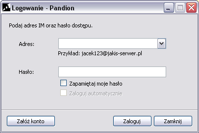
Przy pierwszym uruchomieniu pojawi siê nam puste okienko wyboru - je¿eli skonfigurujemy
kilka profili bêdziemy mieli mo¿liwo¶æ wyboru pomiêdzy nimi na starcie. Okienko
bêdzie siê pojawiac tak¿e je¿eli nie zaznaczymi checkboxa Zapamiêtaj moje
has³o. W drugim przypadku program bêdzie pyta³ nas za ka¿dym razem o
has³o potrzebne do po³±czenia z danym kontem. Aby utworzyæ nowy profil nale¿y
wcisn±æ Za³ó¿ konto.
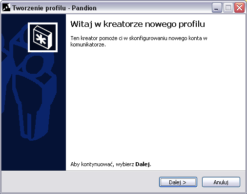
Standardowe okienko powitalne windowsowych wizardów, nale¿y kontynuowaæ wciskaj±c
przycisk Dalej >.
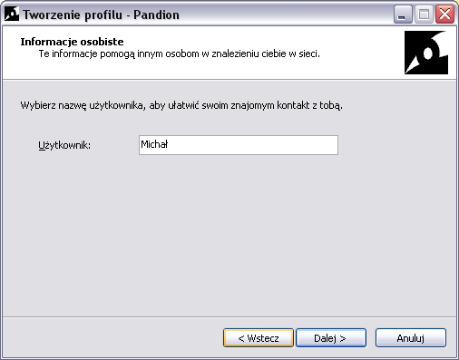
Podajemy przyjazn± nazwê naszego konta.
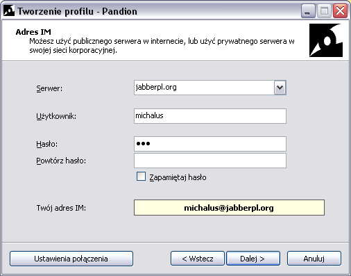
Najwazniejsza czê¶æ kreatora. Nale¿y podaæ tutaj dane dotycz±ce swojego konta
jabberowego na jednym z serwerów. Serwery mo¿na wybieraæ z listy lub wpisaæ
je rêcznie. Je¿eli mamy konto o nazwie michalus na serwerze JabberPL.org
wpisujemy tak jak na rysunku w pole Serwer jabberpl.org, a w pole
U¿ytkownik nasz login, czyli michalus. Wpisujemy nasze has³o oraz
zaznaczamy odpowiednio checkbox Zapamietaj has³o. Je¿eli checkbox
zostanie niezaznaczony program bêdzie nas zawsze przy starcie pyta³ o has³o.
W ¿ó³tej ramce pojawia siê nasz JID. Na rysunku jest to michalus@jabberpl.org,
czyli jak wspomniane zosta³o wcze¶niej u¿ytkownik michalus na serwerze jabberpl.org.
Nastêpnie dobrze jest zobaczyæ Ustawienia po³±czenia wciskaj±c przycisk o tej
nazwie.
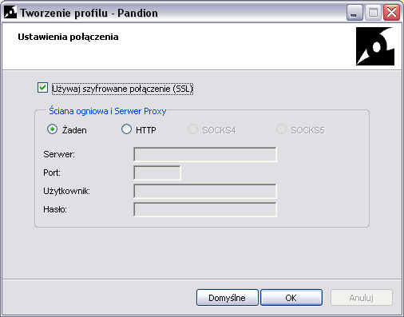
Wskazane jest zaznaczenie opcji U¿ywaj szyfrowane po³±czenie (SSL).
Nasza komunikacja z serwerem bêdzie szyfrowana, w przeciwnym wypadku wszystkie
rozmowy oraz has³a mog± zostaæ w ³atwy sposób pods³uchane. Wszystkie profesjonalne
serwery Jabbera umo¿liwaj± szyfrowanie po³±czeñ.
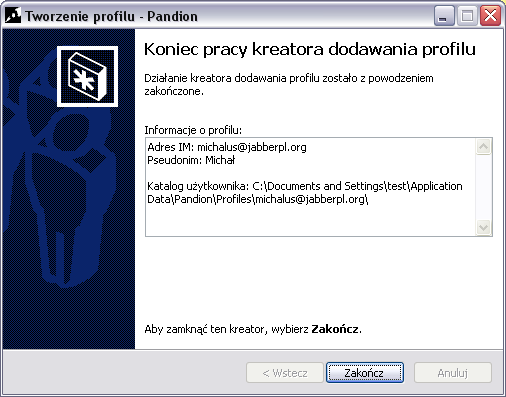
Koñczymy pracê kreatora.
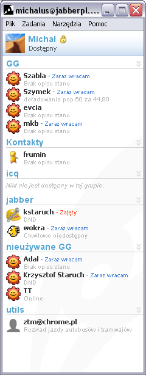
Przyk³adowa lista kontaktów. Widaæ zarejestrowany transport Gadu-Gadu.
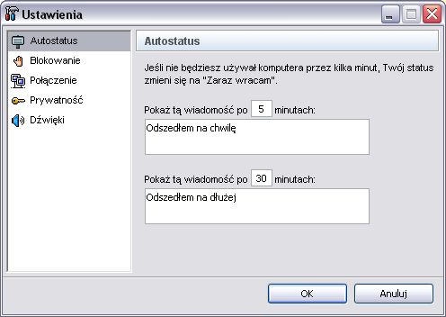
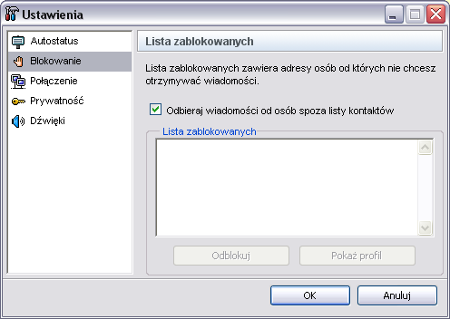
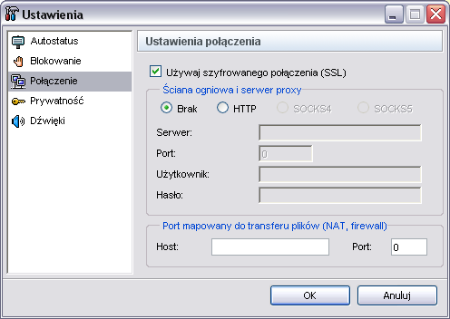
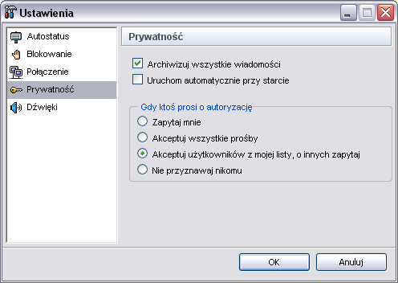
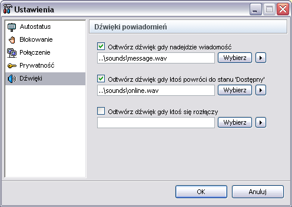
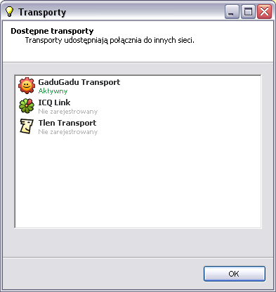
Wywo³ane z menu Narzêdzia okienko pokazuje jakie transporty s±
dostêpne na naszym serwerze. Na li¶cie widaæ, ze transport Gadu-Gadu jest aktywny.
Natomiast transporty ICQ i Tlen wymagaj± rejestracji. Zarejestrowaæ transport
czyli podaæ odpowiednie dane, zazwyczaj nasz identyfikator danej sieci wraz
z has³em. Dla transportu Gadu-Gadu bêdzie to nasz numer GG wraz z has³em, dla
transportu ICQ nasz UIN i has³o, a dla transportu Tlen nasz tlenowy identyfikator
z has³em.
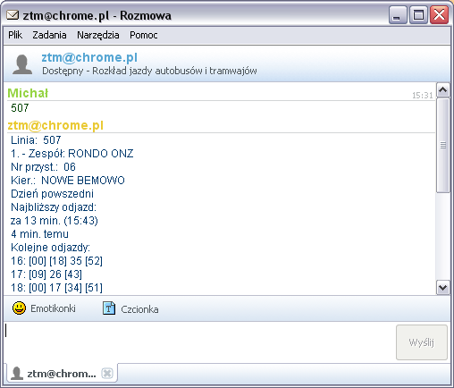
Przyk³adowe okienko rozmowy w Pandionie. Widaæ rozmowê z jabberowym botem podaj±cym
rozk³ad jazdy dla warszawskiego autobusu numer 507. Istnieje wiele botów, ich
listê nale¿y sprawdziæ na swoim serwerze. Bot rozk³adu jazdy ZTM jest powszechnie
dostêpny pod JID ztm@chrome.pl;.